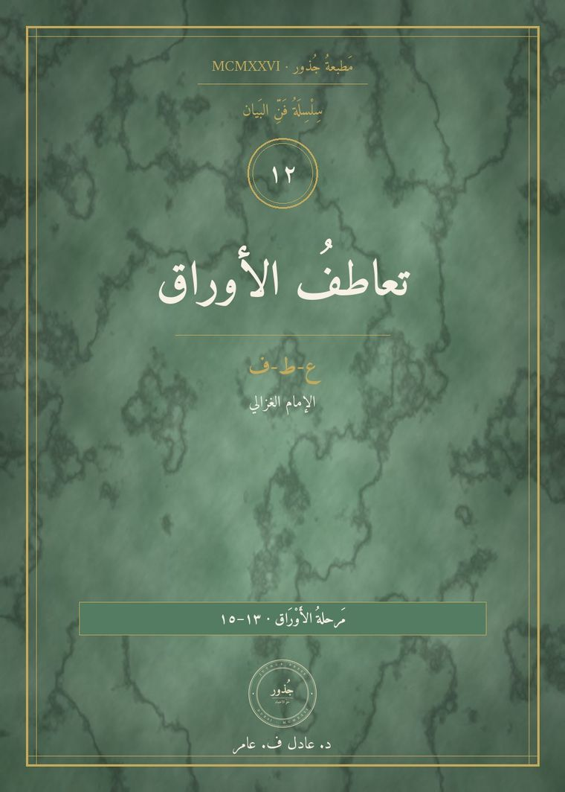
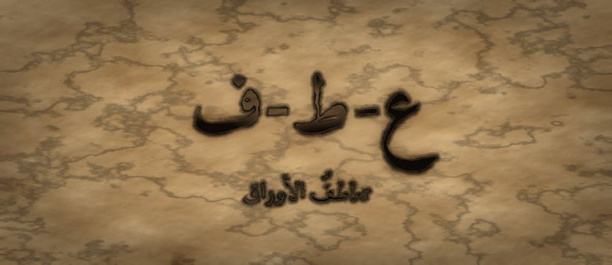

مَطبعةُ جُذور · دبي · MCMXXVI · سِلْسِلَةُ فَنِّ البَيان

مَرحلةُ الأَوْرَاق · الفئة ١٣–١٥ · الجذر ع-ط-ف · الإمام الغزالي
❦ ✦ ❧
السِّفْرُ ١٢ — تعاطفُ الأوراق
«أَنْحَنِي إِلَيْكَ لِأَرَى مِنْ حَيْثُ تَرَى»

الرِّسَالَةُ الجَوْهَرِيَّة
التَّعاطُفُ لَيْسَ شَفَقَةً تَنْزِلُ مِنْ أَعْلَى، وَلا ذَوَبانًا يُفْقِدُكَ نَفْسَكَ. هُوَ انْعِطافٌ مَقْصُودٌ: أَنْ تُغَيِّرَ مَوْضِعَ نَظَرِكَ حَتَّى تَرَى المَشْهَدَ مِنْ حَيْثُ يَقِفُ صاحِبُكَ، ثُمَّ تَعُودَ إِلَى مَوْضِعِكَ حامِلًا ما رَأَيْتَ. تَشْعُرُ مَعَهُ لا بَدَلًا مِنْهُ.
بِطَاقَةُ هُوِيَّةِ السِّفْر
| المستوى / الدرجة | أَوْراقٌ — وَرَقَةٌ تَنْعَطِفُ نَحْوَ الضَّوْءِ (الدرجةُ الأولى في مستوى الأوراقِ) |
| الفئة العمرية | ١٣–١٥ سنة · نطاقُ تداخلٍ يمتدُّ إلى ١٦ |
| الجذر الأساسي | ع – ط – ف · العَطْفُ: المَيْلُ والانحناءُ نحوَ الآخرِ |
| أسرة الجذر | عَطْف · عاطِفة · تَعاطُف · انْعِطاف · عَطُوف · مُنْعَطَف (كلُّها من ع-ط-ف) |
| المحطّة | التَّعاطُفُ — أوّلُ خروجٍ من مركزِ الذاتِ إلى مركزِ آخرَ |
| المرساة الحسّيّة | نقلُ الموضِعِ: يقومُ المتعلّمُ بنفسِهِ ويجلسُ حيثُ كانَ صاحبُهُ جالسًا، ويصفُ ما يراهُ من هناكَ |
| الاستعارة | الورقةُ تنعطفُ نحوَ الضوءِ ولا تنفصلُ عن غصنِها |
| الشخصيتان الحكيمتان | أبو حامدٍ الغزاليُّ (طبيبُ القلوبِ) + الجَدّةُ رملة |
| الشخصية الرمزيّة | نورُ الأوراقِ (نفسُها — تنمو) |
| الشخصية المضادّة | الصَّقِيعُ الخَفِيفُ — شخصيّةٌ رمزيّةٌ (لا تاريخيّةٌ) تحفظُ الأشياءَ ببرودتِها وتظنُّ البرودَ إنصافًا، ثمَّ تتعلَّمُ الدِّفءَ |
| مؤشّرُ النموّ (وصفيٌّ للرصدِ لا بوّابةٌ) | يُسمّي شعورَ الآخرِ بكلمةٍ دقيقةٍ قبلَ أن يَنصحَهُ أو يَحكُمَ عليهِ |
| مجال CASEL | الوعيُ الاجتماعيُّ (Social Awareness) |
| المرجعُ النظريّ | استرشادًا بـ TRT — نَظَرِيَّةِ القراءةِ الملموسةِ · واسترشادًا بأدبيّاتِ أخذِ المنظورِ (Perspective-Taking) |
صَاحِبُ السِّفْرِ مِنَ التُّرَاث
أبو حامدٍ الغزاليُّ (١٠٥٨–١١١١م) فقيهٌ وأصوليٌّ ومتكلِّمٌ من خُراسانَ، درَّسَ في النظاميّةِ ببغدادَ ثمَّ اعتزلَ سنينَ، وألَّفَ «إحياءَ علومِ الدينِ» و«المنقذَ من الضلالِ». اشتُهرَ بتشريحِ أحوالِ القلبِ وأمراضِهِ. نستلهمُ منهُ هنا: أنَّ فهمَ النفسِ الأخرى يبدأُ من تسميةِ حالِها بدقّةٍ، وأنَّ للقلبِ عِلْمًا كما للعقلِ.
الشَّخْصِيَّةُ المُضَادَّة — الصَّقِيعُ الخَفِيفُ — طبقةٌ رقيقةٌ من البردِ تنزلُ على الأوراقِ فَجْرًا، تفخرُ بأنَّها تُعامِلُ الجميعَ بالبرودةِ نفسِها وتُسمّي ذلكَ عدلًا. تتعلَّمُ في النهايةِ أنَّ الإنصافَ لا يعني تجميدَ الشعورِ، وأنَّ قطرةَ ماءٍ دافئةً تُنبِتُ ما لا يُنبِتُهُ بردٌ مُتساوٍ.
الجَذْرُ وَأُسْرَتُه
ع-ط-ف — عَطْف · عاطِفة · تَعاطُف · انْعِطاف · عَطُوف · مُنْعَطَف
الجذرُ (ع-ط-ف) صحيحٌ سالمٌ، ومعناهُ الحسّيُّ الأصلُ: المَيْلُ والانثناءُ، ومنهُ «عَطْفُ» الثوبِ و«مُنْعَطَفُ» الطريقِ؛ فالمعنى الوجدانيُّ فرعٌ عن المعنى الحِسِّيِّ لا العكسُ. و«تَعاطُف» على وزنِ تَفاعُل الدالِّ على المشاركةِ بينَ طرفينِ، بخلافِ «عَطْف» الذي يكونُ من طرفٍ واحدٍ — ومن هنا يُشرَحُ للمعلّمِ أنَّ التعاطفَ تبادُلٌ لا إحسانٌ نازلٌ.
القِصَّةُ الكَامِلَة
المشهد ١ — نورُ تنصحُ نصيحةً صحيحةً في وقتٍ خاطئٍ
صارَتْ نورُ أوراقًا خضراءَ واسعةً. في ذلكَ الأسبوعِ جاءَتْ صديقتُها إلى ظلِّ الشجرةِ وجلسَتْ صامتةً، وعيناها حمراوانِ. سألَتْها نورُ: «ما بِكِ؟» فقالتْ: «خَسِرْتُ شَيْئًا تَعِبْتُ فِيهِ طَوِيلًا.» فبدأَتْ نورُ فورًا — وهي تظنُّ أنَّها تُحسِنُ — تعدُّ لها الحلولَ: «لا تَحْزَنِي، الأَمْرُ بَسِيطٌ. كانَ عَلَيْكِ أَنْ تَبْدَئِي مُبَكِّرًا. وَغَدًا تُعِيدِينَ الأَمْرَ وَتَنْجَحِينَ. وَغَيْرُكِ خَسِرَ أَكْثَرَ مِنْكِ.» كانَ كلامُ نورَ صحيحًا كلُّهُ. ومع ذلكَ نهضَتِ الصديقةُ بعدَ قليلٍ وقالتْ: «شُكْرًا يا نُورُ»، ومشَتْ. وبقيَتْ نورُ وحدَها تُفكِّرُ: «قُلْتُ لَها الصَّوابَ... فَلِمَ ذَهَبَتْ أَثْقَلَ مِمَّا جاءَتْ؟» ثمَّ تذكَّرَتْ شيئًا: لم تسألْها ولا مرّةً كيفَ تشعرُ. عدَّتْ لها الحلولَ ولم تجلسْ معها في حزنِها لحظةً واحدةً.
المشهد ٢ — الصَّقيعُ الخفيفُ يُسمّي البرودَ إنصافًا
في فجرِ اليومِ التالي نزلَ على الأوراقِ الصَّقيعُ الخَفِيفُ. قالَ لنورَ بصوتٍ صافٍ باردٍ: «أَحْسَنْتِ صُنْعًا. المَشاعِرُ تُفْسِدُ الحُكْمَ، وَأَنا لا أُحابِي أَحَدًا: أَنْزِلُ عَلَى الوَرَقَةِ القَوِيَّةِ وَالضَّعِيفَةِ بِالبُرُودَةِ نَفْسِها. هَذا هُوَ العَدْلُ.» وكانَ الصَّقيعُ يخافُ في داخلِهِ شيئًا لم يقلْهُ: أنَّهُ إن ذابَ مرّةً واحدةً فلن يبقى منهُ شيءٌ؛ فاختارَ أن يبقى صُلْبًا باردًا. جرَّبَتْ نورُ طريقتَهُ أسبوعًا: تسمعُ المشكلةَ، وتُعطي الحلَّ، ولا تسمحُ لقلبِها أن يميلَ. كانتْ حلولُها دقيقةً، وسريعةً، ونافعةً على الورقِ. وفي آخرِ الأسبوعِ لاحظَتْ أنَّ أحدًا لم يعدْ يحكي لها شيئًا. قالَتْ لنفسِها: «صِرْتُ أُصِيبُ فِي كُلِّ مَرَّةٍ... وَلَمْ يَعُدْ أَحَدٌ يَسْأَلُنِي.»
المشهد ٣ — الغزاليُّ يُعلِّمُها تسميةَ الحالِ
جلسَتِ الجَدّةُ رملةُ معها ومعَهما شيخٌ نَحِيلٌ كثيرُ الصمتِ، عُرِفَ بأنَّهُ يُداوي القلوبَ كما يُداوي الطبيبُ الأبدانَ: أبو حامدٍ الغزاليُّ. قالَ: «يا نُورُ، الطَّبِيبُ لا يَصِفُ الدَّواءَ قَبْلَ أَنْ يُسَمِّيَ الدَّاءَ. وَأَنْتِ تَصِفِينَ الدَّواءَ لِقَلْبٍ لَمْ تَعْرِفِي اسْمَ ما فِيهِ. أَحُزْنٌ هُوَ أَمْ خَجَلٌ؟ أَمْ غَضَبٌ لابِسٌ ثَوْبَ الحُزْنِ؟ أَمْ خَوْفٌ مِنْ غَدٍ؟ لِكُلٍّ اسْمٌ، وَلِكُلِّ اسْمٍ بابٌ.» قالتْ نورُ: «وَكَيْفَ أَعْرِفُ الِاسْمَ؟» قالَ: «لا تَحْزُرْ، بَلْ قُلْ ما ظَهَرَ لَكِ ثُمَّ اسْأَلْ: أَراكَ مُنْكَسِرًا، أَهُوَ الحُزْنُ أَمْ شَيْءٌ آخَرُ؟ وَاتْرُكْهُ يُصَحِّحُ لَكَ.» وأضافَتِ الجَدّةُ رملةُ: «وَاعْلَمِي يا نُورُ أَنَّ أَكْثَرَ النَّاسِ لا يُرِيدُونَ حَلًّا، بَلْ يُرِيدُونَ شاهِدًا. فَكُونِي شاهِدًا أَوَّلًا، فَإِنْ طَلَبُوا الحَلَّ فَحِينَئِذٍ يَنْفَعُ.»
المشهد ٤ — نورُ تنقلُ موضِعَها
أرادَتِ الجَدّةُ رملةُ أن تُعَلِّمَها بجسدِها لا بلسانِها فقط. قالتْ: «قُومِي مِنْ مَكانِكِ، وَاجْلِسِي أَنْتِ حَيْثُ كانَتْ صاحِبَتُكِ جالِسَةً أَمْسِ. لا أُحَرِّكُكِ أَنا، انْتَقِلِي بِنَفْسِكِ.» فقامَتْ نورُ وجلسَتْ في موضِعِ صديقتِها تحتَ الشجرةِ. ونظرَتْ. فإذا الشمسُ في العينِ مباشرةً من هذا الموضِعِ، وإذا الشجرةُ لا تُظِلُّ هنا، وإذا الطريقُ الذي يمشي فيهِ الناسُ ظاهرٌ تمامًا — فمن يجلسُ هنا يراهُ كلُّ مارٍّ. قالتْ نورُ بصوتٍ خافتٍ: «كانَتْ تَجْلِسُ فِي الشَّمْسِ... وَأَمامَ النَّاسِ... وَهِيَ تَبْكِي. وَأَنا كُنْتُ فِي الظِّلِّ أَعُدُّ لَها الحُلُولَ.» ثمَّ قالتْ: «الآنَ فَهِمْتُ لِمَ كانَتْ تُخْفِي وَجْهَها.» قالتِ الجَدّةُ: «هَذا هُوَ الِانْعِطافُ يا نُورُ. لَمْ تَصِيرِي هِيَ، وَلَكِنَّكِ رَأَيْتِ مِنْ حَيْثُ تَرَى. ثُمَّ عُودِي إِلَى مَوْضِعِكِ — فَإِنَّكِ إِنْ بَقِيتِ هُناكَ ضَعْتُما مَعًا.»
المشهد ٥ — الصَّقيعُ يذوبُ فيصيرُ ماءً لا يختفي
ذهبَتْ نورُ إلى صديقتِها وجلسَتْ بجانبِها على مسافةِ ذراعٍ، ولم تمدَّ يدَها إليها، وسألَتْها: «أَتَأْذَنِينَ لِي أَنْ أَجْلِسَ؟» ثمَّ قالتْ: «أَراكِ مُنْكَسِرَةً وَمُتْعَبَةً. وَأَظُنُّ أَنَّ الأَصْعَبَ لَمْ يَكُنِ الخَسارَةَ، بَلْ أَنْ يَراكِ النَّاسُ وَأَنْتِ تَخْسَرِينَ. أَهَكَذا هُوَ؟» فنظرَتْ إليها الصديقةُ طويلًا وقالتْ: «نَعَمْ. هَذا بِالضَّبْطِ.» ثمَّ بكَتْ قليلًا، لكنَّها كانتْ هذهِ المرّةَ أخفَّ. ولم تُعطِها نورُ حلًّا واحدًا. وبعدَ حينٍ قالتِ الصديقةُ من نفسِها: «أَتَظُنِّينَ أَنِّي أَسْتَطِيعُ أَنْ أُعِيدَ المُحاوَلَةَ؟» فقالتْ نورُ: «الآنَ نَعَمْ.» وكانَ الصَّقيعُ الخفيفُ يسمعُ. وشعرَ بشيءٍ غريبٍ يحدثُ لهُ معَ شروقِ الشمسِ: كانَ يذوبُ. ففزعَ وقالَ: «سَأَنْتَهِي!» فقالتْ نورُ: «انْظُرْ إِلَى أَسْفَلَ.» فنظرَ فرأى نفسَهُ قطراتٍ صافيةً تنزلُ إلى الجذورِ. فقالَ في دهشةٍ: «أَنا لَمْ أَخْتَفِ... أَنا وَصَلْتُ إِلَى الدَّاخِلِ.» وتعلَّمَ الصَّقيعُ أنَّ الدِّفءَ لا يُلغي الإنصافَ، بل يجعلُهُ يصلُ.
المشهد ٦ — صَمْتُ السُّؤالِ الجَسَدِيِّ
قالتِ الجَدّةُ رملةُ في آخرِ النهارِ: «الِانْعِطافُ حَرَكَةٌ يا نُورُ، وَالحَرَكَةُ تُتَعَلَّمُ بِالجَسَدِ.» وهذا تدريبُكَ أنتَ الآنَ: «اخْتَرْ شَخْصًا تُفَكِّرُ فِي أَمْرِهِ. ثُمَّ قُمْ مِنْ مَوْضِعِكَ بِنَفْسِكَ، وَانْتَقِلْ إِلَى المَقْعَدِ الَّذِي كانَ يَجْلِسُ فِيهِ — أَوْ إِلَى أَيِّ مَوْضِعٍ آخَرَ فِي الغُرْفَةِ. اجْلِسْ. وَانْظُرْ إِلَى مَوْضِعِكَ الأَوَّلِ مِنْ هُنا. ثُمَّ أَتْمِمْ فِي سِرِّكَ جُمْلَةً واحِدَةً: مِنْ هُنا يَبْدُو الأَمْرُ... ثُمَّ عُدْ إِلَى مَوْضِعِكَ، وَقُلْ: عُدْتُ، وَمَعِي ما رَأَيْتُ.» انْتَقِلْ بِقَدَمَيْكَ أَنْتَ، وَلا يَنْقُلُكَ أَحَدٌ وَلا يَمَسُّكَ. وَإِنْ لَمْ تُرِدِ القِيامَ، فَأَدِرْ كُرْسِيَّكَ رُبْعَ دَوْرَةٍ فَقَطْ — فَتَغْيِيرُ الزَّاوِيَةِ يَكْفِي. وَتَذَكَّرْ أَنَّ الصَّقِيعَ لَمْ يَخْتَفِ حِينَ ذابَ، بَلْ صارَ ماءً وَصَلَ إِلَى الجُذُورِ فَأَنْبَتَ ما لَمْ يُنْبِتْهُ البَرْدُ.
النُّسْخَةُ المُخْتَصَرَة
جاءَتْ صَدِيقَةُ نُورَ حَزِينَةً، فَعَدَّتْ لَها نُورُ الحُلُولَ كُلَّها وَلَمْ تَسْأَلْها كَيْفَ تَشْعُرُ، فَذَهَبَتْ أَثْقَلَ مِمَّا جاءَتْ. وَقالَ لَها الصَّقِيعُ الخَفِيفُ: «المَشاعِرُ تُفْسِدُ الحُكْمَ، وَأَنا أُبَرِّدُ الجَمِيعَ بِالتَّساوِي وَهَذا هُوَ العَدْلُ.» فَجَرَّبَتْ نُورُ أُسْبُوعًا، فَأَصابَتْ فِي كُلِّ مَرَّةٍ وَلَمْ يَعُدْ أَحَدٌ يَحْكِي لَها. قالَ الغَزالِيُّ: «الطَّبِيبُ لا يَصِفُ الدَّواءَ قَبْلَ أَنْ يُسَمِّيَ الدَّاءَ؛ سَمِّي ما فِي القَلْبِ، ثُمَّ اسْأَلِي: أَهَكَذا هُوَ؟» وَقالَتِ الجَدَّةُ رَمْلَةُ: «قُومِي بِنَفْسِكِ وَاجْلِسِي فِي مَوْضِعِها.» فَفَعَلَتْ نُورُ، فَإِذا الشَّمْسُ فِي العَيْنِ وَالنَّاسُ يَمُرُّونَ. فَعادَتْ وَقالَتْ لِصاحِبَتِها: «أَظُنُّ الأَصْعَبَ أَنْ يَراكِ النَّاسُ وَأَنْتِ تَخْسَرِينَ. أَهَكَذا هُوَ؟» فَقالَتْ: «نَعَمْ، بِالضَّبْطِ.» وَذابَ الصَّقِيعُ فَوَجَدَ نَفْسَهُ ماءً وَصَلَ إِلَى الجُذُورِ، وَلَمْ يَخْتَفِ. وَفِي المَساءِ قالَتْ نُورُ لِلْجَدَّةِ رَمْلَةَ: «كُنْتُ أُعْطِي الحُلُولَ وَأَنا فِي الظِّلِّ، وَلَمْ أَجْلِسْ يَوْمًا فِي الشَّمْسِ الَّتِي يَجْلِسُونَ فِيها.» فَقالَتِ الجَدَّةُ: «وَالآنَ عُدْتِ إِلَى مَوْضِعِكِ وَمَعَكِ ما رَأَيْتِ — وَهَذا هُوَ التَّعاطُفُ لا الذَّوَبانُ.»
المِرْسَاةُ الحِسِّيَّة
يَقُومُ المُتَعَلِّمُ بِقَدَمَيْهِ وَيَنْتَقِلُ إِلَى المَوْضِعِ الَّذِي كانَ يَجْلِسُ فِيهِ صاحِبُهُ، فَيَجْلِسُ وَيَنْظُرُ حَوْلَهُ: أَيْنَ الضَّوْءُ؟ مَنْ يَراهُ مِنْ هُنا؟ ماذا يَسْمَعُ؟ ثُمَّ يُتِمُّ فِي سِرِّهِ: «مِنْ هُنا يَبْدُو الأَمْرُ...» ثُمَّ يَعُودُ إِلَى مَوْضِعِهِ وَيَقُولُ: «عُدْتُ وَمَعِي ما رَأَيْتُ.» يَنْتَقِلُ بِنَفْسِهِ وَحْدَهُ، وَلا يَنْقُلُهُ أَحَدٌ وَلا يَمَسُّهُ، وَيَكْفِي أَنْ يُدِيرَ مَقْعَدَهُ رُبْعَ دَوْرَةٍ إِنْ شاءَ.
العَنَاصِرُ الخَمْسَةُ لِلتَّطْبِيق
| المُخرَجُ اللُّغَويُّ | صيغةُ التسميةِ والتحقُّقِ: «أَراكَ... وَأَظُنُّ أَنَّ الأَصْعَبَ عَلَيْكَ... أَهَكَذا هُوَ؟» — ثلاثُ خُطواتٍ: ملاحظةٌ ظاهرةٌ، ثمَّ فرضيّةٌ عن الشعورِ، ثمَّ تسليمُ التصحيحِ لصاحبِ الشعورِ. |
| الحركةُ الجسديّةُ | نقلُ الموضِعِ: يقومُ المتعلّمُ بقدمَيْهِ ويجلسُ حيثُ كانَ الآخرُ، يصفُ ما يراهُ من هناكَ، ثمَّ يعودُ إلى موضِعِهِ قائلًا: «عُدْتُ وَمَعِي ما رَأَيْتُ». العودةُ جزءٌ من التمرينِ لا زيادةٌ عليهِ. |
| الدفءُ العلائقيُّ | قاعدةُ «الشاهِدُ قبلَ الناصِحِ»: لا يُقدَّمُ حلٌّ حتى يُطلَبَ. ويُدرَّبُ المتعلّمُ على جملةٍ واحدةٍ: «أَتُرِيدُ أَنْ أَسْمَعَ فَقَطْ، أَمْ أَنْ أُفَكِّرَ مَعَكَ؟» |
| البديلُ الحسّيُّ | «سُلَّمُ الأسماءِ»: بطاقاتٌ عليها أسماءُ مشاعرَ متدرِّجةٍ (انزعاجٌ · إحباطٌ · حُزْنٌ · انكسارٌ · خوفٌ · خجلٌ). يختارُ صاحبُ الشعورِ بطاقتَهُ بيدِهِ، فيتعلّمُ الطرفانِ الدقّةَ بلا كلامٍ كثيرٍ. |
| الجسرُ الإنجليزيُّ | «I sit where you sit, to see what you see.» |
دَلِيلُ الأَهْلِ وَالمُعَلِّم
| قبل الجلسة | ضَعوا الأجهزةَ في صندوقٍ مغلقٍ. واتَّفِقوا على قاعدةٍ واحدةٍ تُكتَبُ وتُعلَّقُ: «لا نَنْصَحُ حَتَّى يُطْلَبَ مِنَّا.» وهيّئوا مقعدَينِ متقابلَينِ في الغرفةِ لتمرينِ نقلِ الموضِعِ. |
| أثناء الجلسة | اسألوا سؤالَ الاختيارِ قبلَ كلِّ شيءٍ: «أَتُرِيدُ أَنْ أَسْمَعَ فَقَطْ، أَمْ أَنْ أُفَكِّرَ مَعَكَ؟» والتزِموا بجوابِهِ حرفيًّا حتى لو صعُبَ عليكم. وإن سمّيْتُم شعورَهُ فاسألوا: «أَهَكَذا هُوَ؟» ودَعُوهُ يُصحِّحُ لكم بلا اعتراضٍ. |
| بعد الجلسة | في نهايةِ اليومِ يُكتَبُ في دفترِ البيتِ سطرٌ واحدٌ: «شُعُورٌ لاحَظْتُهُ اليَوْمَ عِنْدَ غَيْرِي وَسَمَّيْتُهُ بِاسْمِهِ.» لا تُقارَنُ السطورُ بينَ الإخوةِ ولا تُقيَّمُ؛ تُقرأُ فقط في نهايةِ الأسبوعِ. |
مُؤَشِّرَاتُ الرَّصْدِ الوَصْفِيَّة
| ما تُلاحِظُه | ماذا يعني |
|---|---|
| يسألُ عن الشعورِ قبلَ أن يعرِضَ الحلَّ | بدأَ يُقدِّمُ الفهمَ على الإصلاحِ؛ مؤشّرٌ وصفيٌّ على انتقالِ الانتباهِ من المشكلةِ إلى صاحبِها. |
| يستعملُ أسماءَ مشاعرَ دقيقةً (انكسارٌ، إحباطٌ، خجلٌ) لا كلمةً واحدةً عامّةً | اتَّسعَتْ مفرداتُهُ الوجدانيّةُ، وهي شرطُ الدقّةِ في أخذِ المنظورِ. |
| يقبلُ تصحيحَ الآخرِ لتخمينِهِ دونَ دفاعٍ | يفهمُ أنَّ صاحبَ الشعورِ هو مرجعُهُ الوحيدُ؛ نرصدُ ذلكَ وصفًا لا شرطًا. |
| يعودُ إلى موضِعِهِ بعدَ التمرينِ ولا يبقى غارقًا في حُزنِ صاحبِهِ | يميّزُ بينَ التعاطُفِ والذوَبانِ؛ علامةٌ على تعاطُفٍ مستدامٍ لا مُنهِكٍ. |
مُفْرَدَاتُ السِّفْر
| الكلمة | المعنى |
|---|---|
| تَعاطُفٌ | أن تشعرَ معَ غيرِكَ لا بدلًا منهُ |
| انْعِطافٌ | مَيْلٌ مقصودٌ نحوَ جهةٍ أخرى |
| عاطِفَةٌ | مَيْلٌ في القلبِ نحوَ إنسانٍ أو شيءٍ |
| مُنْعَطَفٌ | موضِعُ الانحناءِ في الطريقِ |
| مَنْظُورٌ | الزاويةُ التي يُرى منها الشيءُ |
| شاهِدٌ | مَن يحضُرُ ويرى دونَ أن يُصدِرَ حُكْمًا |
الجِسْرُ الإِنْجْلِيزِيّ
| عربي | English |
|---|---|
| تَعاطُفٌ | empathy |
| شَفَقَةٌ / إِشْفاقٌ | pity (a look from above) |
| مَنْظُورٌ | perspective |
| أَهَكَذا هُوَ؟ | Is that how it is? |
| أَتُرِيدُ أَنْ أَسْمَعَ فَقَطْ؟ | Do you want me to just listen? |
| عُدْتُ وَمَعِي ما رَأَيْتُ | I came back carrying what I saw |
أَسْئِلَةُ الفَهْم
- ماذا فَعَلَتْ نُورُ حِينَ جاءَتْها صاحِبَتُها حَزِينَةً أَوَّلَ مَرَّةٍ؟ (تذكُّر)
- لِماذا لَمْ يَعُدْ أَحَدٌ يَحْكِي لِنُورَ رَغْمَ أَنَّ حُلُولَها كانَتْ صائِبَةً؟ (استنتاج)
- انْتَقِلْ بِنَفْسِكَ إِلَى مَقْعَدٍ آخَرَ فِي الغُرْفَةِ وَانْظُرْ إِلَى مَوْضِعِكَ الأَوَّلِ: ما الشَّيْءُ الَّذِي رَأَيْتَهُ وَلَمْ تَكُنْ تَراهُ؟ (سؤالٌ حسّيٌّ حركيٌّ)
- مَتَى احْتَجْتَ أَنْتَ إِلَى شاهِدٍ لا إِلَى ناصِحٍ؟ (ربطٌ شخصيٌّ)
نَشَاطٌ وَوَسَائِط
| نشاطٌ فنّيّ | «لَوْحَتانِ لِمَشْهَدٍ واحِدٍ»: يرسمُ المتعلّمُ المشهدَ نفسَهُ مرّتينِ — مرّةً من موضِعِهِ ومرّةً من موضِعِ شخصٍ آخرَ فيهِ، بالألوانِ والزوايا التي يراها كلٌّ منهما. ثمَّ يكتبُ تحتَ الثانيةِ: «مِنْ هُنا يَبْدُو الأَمْرُ...» |
| نشاطٌ تمثيليّ | «الكُرْسِيُّ الآخَرُ»: يُمثَّلُ موقفٌ قصيرٌ، ثمَّ يقومُ كلُّ مؤدٍّ بنفسِهِ إلى كرسيِّ الآخرِ ويُعيدُ المشهدَ من موضِعِهِ. لا تقييمَ للأداءِ ولا مفاضلةَ؛ السؤالُ الوحيدُ: «ما الَّذِي لَمْ يَكُنْ ظاهِرًا مِنْ كُرْسِيِّكَ الأَوَّلِ؟» |
جِسْرُ الذَّاكِرَة
إلى الوراءِ — السِّفرُ الحاديَ عشرَ («عُذرُ الغصنِ»): تعلَّمْتَ أن تُسمّيَ أثرَ فِعْلِكَ في غيرِكَ بعدَ وقوعِهِ؛ واليومَ تعلَّمْتَ أن تقرأَ حالَ غيرِكَ قبلَ أن يقعَ أثرٌ أصلًا. إلى الأمامِ — السِّفرُ الثالثَ عشرَ («خِلافُ الأوراقِ»): وحينَ تختلفُ معَ مَن تعاطفْتَ معَهُ، ستحتاجُ أن تحفظَ الرأيَ والودَّ معًا — وهذا أصعبُ ما في الأوراقِ.
قَائِمَةُ التَّحَقُّق
- الجذرُ (ع-ط-ف) صحيحٌ صرفيًّا، والصلةُ بينَ المعنى الحسّيِّ (المُنْعَطَفِ) والمعنى الوجدانيِّ (العاطفةِ) مشروحةٌ للمعلّمِ بدقّةٍ.
- الشخصيّةُ التراثيّةُ (الغزاليُّ) موثَّقةٌ بهامشٍ صحيحٍ تاريخيًّا، والصَّقيعُ موسومٌ صراحةً بأنَّهُ رمزيٌّ لا تاريخيٌّ.
- الفرقُ بينَ التعاطُفِ والشفقةِ والذوَبانِ مبيَّنٌ في النصِّ وفي المفرداتِ، والعودةُ إلى الموضِعِ جزءٌ إلزاميٌّ من المرساةِ.
- حدُّ اللمسِ محفوظٌ: استئذانٌ قبلَ الجلوسِ، ومسافةُ ذراعٍ، ولا لمسَ من المرافقِ، وأيُّ لمسٍ بينَ المتعلّمينَ اختياريٌّ بموافقةٍ صريحةٍ.
- المؤشّراتُ الأربعةُ وصفيّةٌ للرصدِ فقط، بلا بوّاباتٍ ولا شروطِ انتقالٍ، ولا مقارنةَ بينَ المتعلّمينَ ولا مسابقةَ.
- الإسنادُ المرجعيُّ بصيغةِ «استرشادًا بـ TRT — نَظَرِيَّةِ القراءةِ الملموسةِ» بلا ادّعاءِ اعتمادٍ، والتشكيلُ مدقَّقٌ على كلِّ نصٍّ موجَّهٍ للمتعلّمِ.

مَطبعةُ جُذور · دبي · MCMXXVI · صمّمه وطوّره د. عادل ف. عامر
Designed and developed by Dr. Adel F. Amer · Amer (2024) · CC BY-NC-SA 4.0
↤ عودةٌ إلى خِزانةِ الأسفار